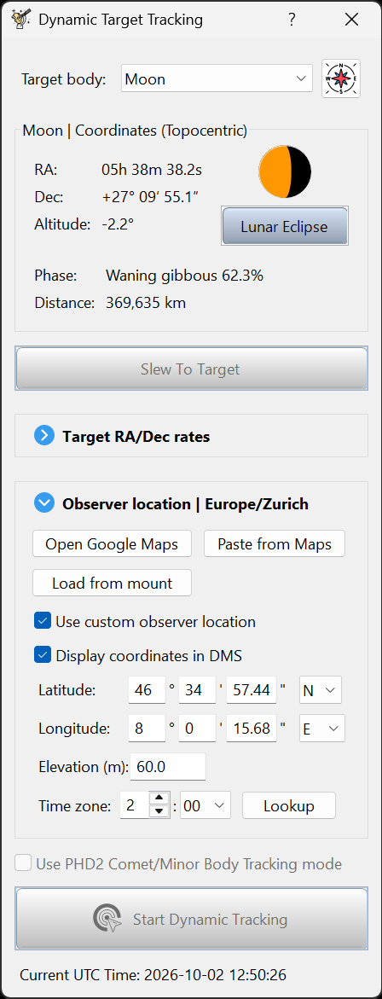

Prepare in advance
Build and rehearse the plan while there is time to change the setup.
Choose the observing site and event
Set the observer site in Dynamic Target Tracking before opening the planner. Confirm coordinates, elevation and time zone in the planner header. If the site is missing or wrong, correct it in Dynamic Target Tracking, reopen the planner and check the resulting visibility and plan.

Check the Moon’s altitude through the phases you want to record. A calculated horizon does not describe buildings, trees or your mount’s clearance. Visit the site or check those obstructions in advance.
Prepare the physical rig
- Frame the Moon with enough margin for tracking error through the whole run.
- Confirm polar alignment, image scale and PHD2 calibration for the actual optics and guiding camera.
- Establish a sharp focus baseline and repeatable exposure/gain settings on the Moon.
- Test cables, power, cooling if available, storage and the capture folder with a sustained camera run.
- Review the meridian crossing and mount limits. HelioMaker reports a crossing but does not command a meridian flip in this workflow.
Prove the plan in stages
- Build the plan and save a draft.
- Run the lunar camera benchmark for the selected setup.
- Use a timing-only or rendered rehearsal to learn the phase sequence.
- Rehearse with the real SharpCap camera and the chosen guiding arrangement. Test the longest planned exposures and check actual file delivery.
- Review saved images, achievable cadence and recovery prompts, then save the approved final plan.
Use Preflight again on eclipse night; a successful rehearsal does not confirm the current camera connection, sky conditions or framing.